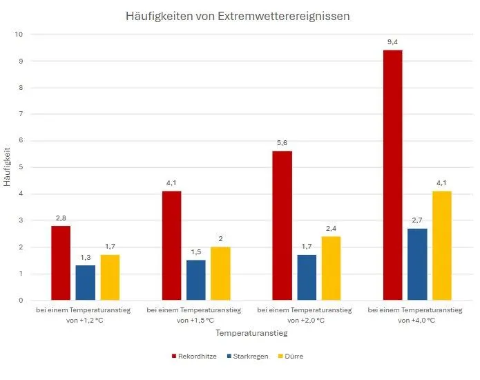
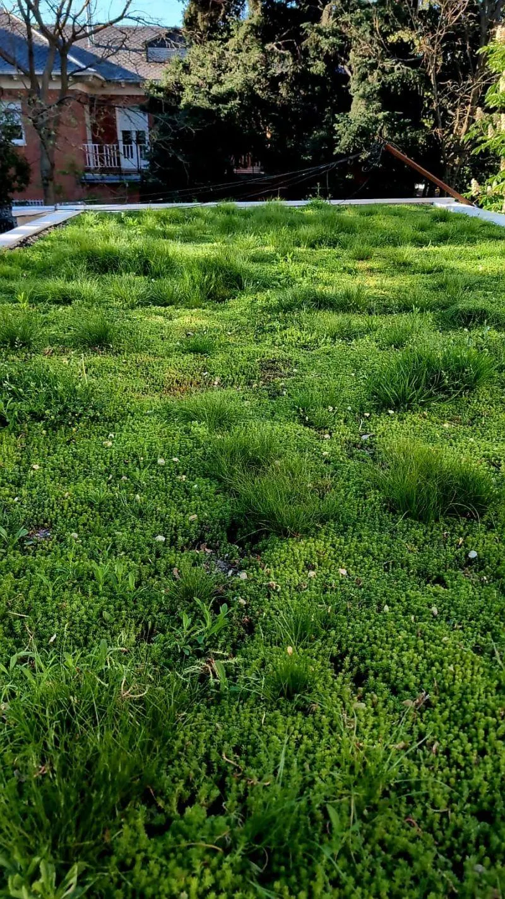

Gemeinsam mit unserem Partner SECALFLOR realisieren wir unterschiedlichste Begrünungsprojekte an Gebäuden und für Kommunen.
Zunehmend längere Perioden mit Hitze und Trockenheit wechseln sich mit Starkregenereignissen ab. Dieser Trend wird sich weiter verstärken. Gleichzeitig nimmt der Hitzestress in Innenstädten durch hohe Versiegelung zu.
Dieser Entwicklung müssen — und wollen — wir uns als Bauträger und Projektentwickler stellen. Die Schaffung von mehr Grün ist eine der zentralen Handlungsoptionen.
Begrünungen vereinen gleich mehrere wünschenswerte Effekte: Sie speichern Wasser, verschaffen Abkühlung, sorgen für frische Luft und schützen die Bausubstanz. Sie sind elementarer Bestandteil gesünderer, vielfältigerer Lebensräume und erhöhen spürbar das Wohlbefinden der Bewohner.


Was auf der Oberfläche selbstverständlich wirkt — sattes, dichtes Grün auch nach Wochen ohne Regen — ist das sichtbare Ergebnis der Speicher- und Verdunstungslogik darunter.
Patentierte, biozertifizierte Speicherpanels aus Roggenmehl, Holzfaser, Kalk und Bentonit. Außergewöhnlich leicht, hervorragendes Wasser- und Nährstoffspeichervermögen — ganz ohne High-Tech, nach dem Vorbild der Natur.
Von Dachstatik bis Fördermitteln — wir zeigen Ihnen die Potentiale für Ihr Objekt.